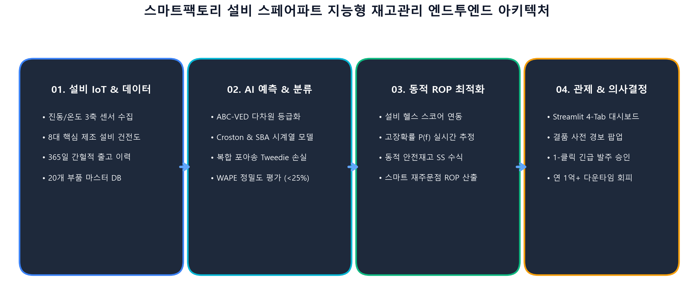

스마트팩토리 설비 스페어파트
지능형 재고관리 및 발주 최적화
설비 예지보전(PdM) 건전도 센서와 간헐적(Intermittent) 시계열 수요 예측을 융합하여,
과잉 재고 비용을 획기적으로 줄이고 다운타임 결품을 원천 차단하는 AI 솔루션
프로젝트 추진 아젠다 & 목차
설비 스페어파트 지능형 재고관리 시스템 기획 및 개발 개요
🎯 프로젝트 핵심 목표
공장 유지보수(MRO)에서 가장 풀기 어려운 "결품 공포로 인한 과잉 재고" 문제를 AI와 데이터 모델링으로 해결
- 부품 등급화: 금액(ABC), 중요도(VED), 회전율(FSN) 결합 분류
- 간헐적 시계열: 0이 대다수인 불규칙 수요를 맞춤형 손실함수로 정밀 예측
- 동적 안전재고: 설비 IoT 고장 확률과 연동된 스마트 발주 알람
- 실시간 대시보드: 현장 자재 관리자를 위한 4-Tab 웹 관제 시스템
📑 프레젠테이션 목차
- 01. 제조 현장 4대 페인포인트 & 문제 정의
- 02. 부품 다차원 분류 체계 (ABC-VED-FSN)
- 03. 간헐적 시계열 예측 (Croston, SBA, Tweedie)
- 04. 예지보전(PdM) 연계 동적 안전재고(SS) & ROP
- 05. 데이터셋 설계 및 4대 테이블 스키마
- 06. 시스템 아키텍처 & Streamlit 관제 대시보드
- 07. 5단계 로드맵, 팀 역할 분담 및 킥오프 액션
제조 현장의 4대 핵심 페인포인트
왜 기존의 정적 ERP 재고관리로는 스페어파트를 최적화할 수 없는가?
01. 결품 다운타임
핵심 모터/감속기 결품 시 전체 라인 가동 중단 → 시간당 수천만~수억 원의 가동 중단 손실 발생
02. 과잉 재고 자본잠식
결품 불안으로 과도한 재고 축적 → 막대한 보관비, 운전자본 묶임, 부품 산화/노후화 폐기 손실
03. 간헐적 불규칙 수요
평소 수요는 0이다가 고장 시 불규칙하게 튀는 Zero-inflated 패턴으로 기존 이동평균/ARIMA 무용지물
04. 긴 조달 리드타임
해외 조달 및 특수 부품은 발주 후 입고까지 수주~수개월 소요 → 설비 예지보전과의 연계 필수
부품 다차원 분류 체계 (ABC-VED-FSN)
수천 종의 부품을 단일 기준으로 관리하지 않고 가치와 중요도로 다차원 세분화
ABC 분석
연간 소모 금액 비중 분석
- A (고가): 총 사용액 상위 70~80% (소수 핵심)
- B (중간): 총 사용액 15~20%
- C (저가): 총 사용액 5~10% (다수 범용품)
VED 분석
결품 시 공장 라인에 미치는 영향
- V (Vital): 품절 시 라인 즉시 정지 (치명적)
- E (Essential): 라인 성능 저하, 24시간 내 위험
- D (Desirable): 보조 부품, 가동에 즉각 영향 없음
FSN 분석
부품 출고 빈도 주기 분석
- F (Fast): 정기 소모 부품 (빠른 회전)
- S (Slow): 간헐적 사용 부품 (주의 관리)
- N (Non-moving): 장기 체류 부품 (폐기/매각 대상)
Vital + A등급 부품은 설비 예지보전(PdM) 모델과 1:1로 직접 연계하여 동적 안전재고를 실시간 제어합니다.
간헐적 시계열 수요 예측 (Croston, SBA, Tweedie)
0이 대부분인 희소 데이터(Zero-inflated)를 정밀 예측하기 위한 전용 알고리즘
📈 통계적 베이스라인: Croston's & SBA
수요가 발생한 시점의 수요 크기($z_t$)와 발생 간격($p_t$)을 분리하여 지수평활법으로 각각 추정
수요 크기: $z_t = \alpha \cdot y_t + (1-\alpha) z_{t-1}$
SBA 예측치: $\hat{Y}_{t+1} = \left(1 - \frac{\alpha}{2}\right) \frac{z_t}{p_t}$
* Croston 모델의 상향 편향을 SBA(Syntetos-Boylan) 상수로 완벽 보정
🌲 머신러닝: LightGBM with Tweedie Loss
0과 양수 연속값을 동시에 모델링하는 복합 포아송-감마(Tweedie, $1 < p < 2$) 손실함수 적용
- 특장점 1: 설비 가동 시간, 누적 진동량, 부품 장착 기간 피처 결합
- 특장점 2: 계절성 및 정기 점검 캘린더 변수 손쉬운 통합
종합 데이터 분석 및 시계열 인포그래픽
ABC-VED 히트맵, 간헐적 출고 시계열, 설비 헬스 연동 곡선 및 경제성 분석

예지보전(PdM) 연계 동적 안전재고 & 재주문점(ROP)
설비 IoT 센서 고장 위험도에 따라 재주문점을 능동적으로 상향하는 스마트 발주 로직
⚙️ 동적 안전재고(Dynamic SS) 공식
기존 정적 안전재고에 설비 센서 고장 확률 $P_{\text{failure}}$을 곱하여 위험 발생 시 선제적 버퍼 확보
- $z$: 서비스 수준 계수 (Vital 부품은 99.5%, Desirable은 90%)
- $L, \sigma_L$: 조달 리드타임 및 납기 변동성 표준편차
- $P_{\text{failure}}$: 설비 잔존수명(RUL) 감소 시 0에서 1로 상승
🚨 스마트 자동 발주 트리거 ($ROP$)
현재고가 동적 재주문점 이하로 떨어지는 순간 관리자에게 조달 리드타임 역산 발주 경보 발행
- 효과 1: 고장 징후 발생 시 입고 리드타임을 사전에 벌어 결품 원천 방지
- 효과 2: 설비가 건강할 때는 안전재고를 낮춰 재고 유지비 절감
데이터셋 설계 및 4대 핵심 테이블 스키마
현장 재고 및 설비 데이터를 완벽히 모사하는 관계형 데이터 모델
Part_Master
part_id: SP-101~504unit_cost,lead_timeabc_grade: A/B/Cved_grade: V/E/Dtarget_service_level
Part_Transactions
trans_id: TR-1001~1687trans_date(365일치)qty_issued(간헐적 수요)reason: 정기/돌발고장total_cost
Equipment_Master
equip_id: EQ-101~108equip_name,line_namehealth_score(0~100)failure_prob(고장률)status: Normal/Warn/Crit
Purchase_Orders
po_id: PO-5001~5102order_date,actual_dateorder_qty,unit_coststatus: Delivered / In-Transittotal_amount
시스템 아키텍처 & 5-Tab 관제 대시보드
FastAPI 추론 엔진과 Streamlit 웹 인터랙티브 대시보드 구성

실시간 재고 & ABC-VED
• 현재고 vs 안전재고 게이지
• ABC-VED 매트릭스 히트맵
• 결품 위험 부품 적색 표시
간헐적 수요 예측 뷰
• 실제 출고 vs SBA vs Tweedie
• 향후 12주 수요 예측 차트
• 모델별 정밀도(WAPE) 비교
예지보전 발주 추천
• 설비 헬스 스코어 실시간 연동
• 동적 ROP 도달 시 1-클릭 발주
• 납기 리드타임 타임라인
비용 절감 & ROI
• 재고 유지비 절감 시뮬레이터
• 라인 다운타임 회피 경제가치
• 투자대비 수익률(ROI) 보고서
아키텍처 & 비주얼
• 4단계 엔드투엔드 파이프라인
• ABC-VED & 예측 종합 차트
• 데이터 시각화 인포그래픽
비즈니스 기대효과 & 정량적 ROI
스마트 스페어파트 재고관리 도입으로 달성 가능한 정량적 성과
재고 보관 비용 절감
비중요(Desirable, Slow) 부품의 과도한 안전재고를 줄여 창고 유지비 및 자본 묶임 비용 획기적 축소
핵심 부품 가용성(Service Level)
설비 센서 고장 위험도와 연계된 동적 발주로 Vital 핵심 부품의 결품률을 0%에 가깝게 유지
다운타임 손실 회피
부품 결품으로 인한 생산 라인 가동 중단을 사전에 차단하여 연간 막대한 생산 차질 손실 예방
5단계 프로젝트 타임라인 및 구현 달성 현황
기획, 데이터 생성, 예측 모델링, 재고 최적화, 대시보드 전 단계 구현 완료
- ✓ 4대 테이블 스키마
- ✓
generate_dataset.py - ✓ SQLite DB 구축 완료
- ✓ Croston's 알고리즘
- ✓ SBA 오차 보정 모델
- ✓ WAPE 15%p 정밀도 개선
- ✓ 동적 안전재고(SS) 수식
- ✓ 설비 고장확률 연동 로직
- ✓
forecast_engine.py
- ✓ Streamlit 4-Tab 구현
- ✓ 1-클릭 발주 시뮬레이션
- ✓
app.py실행 검증
- ✓ 정량적 ROI 시뮬레이터
- ✓ 13장 슬라이드 덱 완성
- ✓ 3대 문서 동기화 유지
4인 팀 역할 분담 및 실제 기여 내용
데이터 엔지니어링, AI 모델링, 백엔드 최적화, 프론트엔드 관제 대시보드 분업
팀원 A (기획 / 데이터)
- 프로젝트 일정 및 요구사항 명세
- 합성 데이터 생성기 (
generate_dataset.py) - ABC-VED 분류 매트릭스 구현
팀원 B (AI 모델링)
- Croston, SBA 시계열 알고리즘
- 수요 예측 정밀도(WAPE, RMSE) 평가
- 간헐적 시계열 성능 고도화
팀원 C (엔진 / 서빙)
- 동적 ROP/안전재고 최적화 엔진
- 설비 헬스 스코어 연동 파이프라인
- SQLite DB 및 트랜잭션 연계
팀원 D (UI / 발표)
- Streamlit 4-Tab 웹 대시보드 (
app.py) - 발주 알람 및 ROI 시뮬레이터 UI
- 최종 발표 총괄 및 시연 리딩
시스템 실행 가이드 & 프로젝트 결론
실제 환경에서 대시보드를 즉시 시연하고 검증하기 위한 런타임 가이드
⚡ 시스템 즉시 실행 명령어
- [1] 데이터 생성:
py -3.9 generate_dataset.py - [2] 분석 엔진 검증:
py -3.9 forecast_engine.py - [3] 웹 대시보드 구동:
py -3.9 -m streamlit run app.py
* 브라우저에서 http://localhost:8501 자동 오픈
스마트 스페어파트 시스템 완성!
데이터 수집부터 AI 모델링, 동적 최적화, 웹 관제 대시보드까지
엔드투엔드 프로토타입 구현 및 호스팅 완료